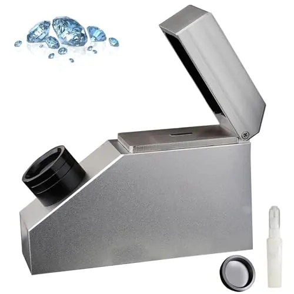
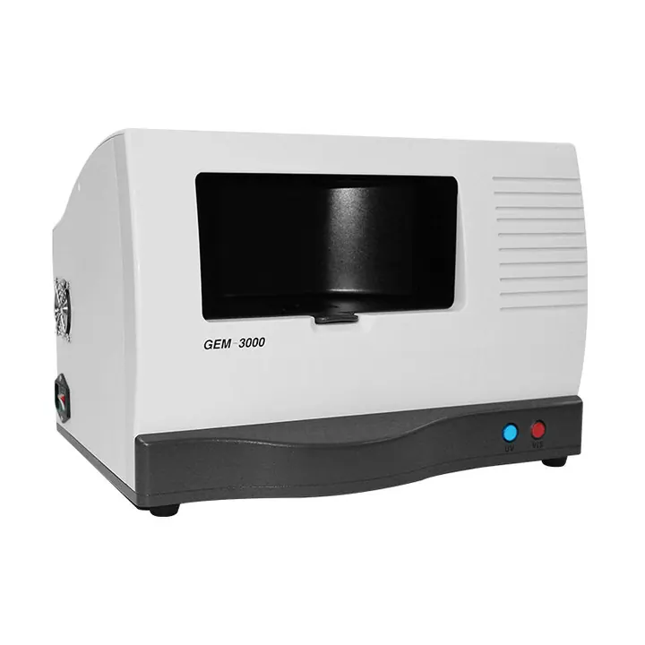

分光鏡：寶石的顏色光譜
寶石的顏色，是它「吞掉」某些光波長的結果——分光鏡把這個祕密拆成一道彩虹。


核心定義
分光鏡（spectroscope）把寶石透射/反射的光拆成光譜——寶石吸收特定波長後，光譜上出現「暗線/暗帶」——這些吸收譜線是「顏色化學」的指紋：紅寶的鉻譜線、祖母綠的鉻釩譜、藍寶的鐵譜。
分光鏡的應用：① 確認致色元素（鉻/鐵/釩——判斷天然與處理）；② 區分相似寶石（紅寶 vs 石榴石 vs 尖晶石——譜線不同）；③ 檢測處理（染色、輻照的譜線特徵）。它是「顏色的顯微鏡」。
特徵與分類
| 寶石 | 特徵譜線 | 意義 |
|---|---|---|
| 紅寶 | 鉻譜（紅段+藍段） | 天然鉻色 |
| 藍寶 | 鐵譜 | 天然鐵色 |
| 祖母綠 | 鉻釩譜 | 鉻釩致色 |
| 合成紅寶 | 譜線更清晰 | 合成線索 |
| 染色綠玉髓 | 染料譜帶 | 處理警訊 |
紅寶的鉻譜：紅段強吸收＋藍段吸收帶——「鉻的簽名」；藍寶的鐵譜：黃綠段吸收帶——「鐵的簽名」。合成紅寶的譜線常「過於乾淨清晰」——光譜是合成品的破綻。
科學原理
吸收光譜的原理：寶石中的致色離子（鉻、鐵、釩、錳）吸收特定波長的光——鉻吸收黃綠與藍紫（顯紅）、鐵吸收黃綠（顯藍）——光譜上的暗帶，就是「被吞掉的光」的記錄。每種離子的吸收位置是固定的——「指紋」。
儀器類型：手持分光鏡（稜鏡/繞射光柵，入門）、精密光譜儀（實驗室）。光譜鑑定的優勢：看「內部的顏色化學」——肉眼與放大鏡看不見的，光譜寫得清清楚楚。
鑑定與鑑別方法
- 透射光觀察：光譜暗帶
- 對比標準譜線表
- 看鉻/鐵/釩譜線
- 查處理：染色輻照特徵
- 配合折射率與比重
市場行情與保養建議
市場價值：手持分光鏡（約數百人民幣）是「顏色鑑定」的利器——紅寶 vs 石榴石（鉻譜 vs 無鉻譜）、天然 vs 染色——幾百元的工具，看穿「顏色裡的化學」。鑑定師的「第三隻眼」。
提醒：光譜觀察需要「光線充足＋練習」——譜線的判讀是經驗活。實驗室的光譜儀（UV-Vis）則能精確定量——高價寶石的處理檢測（輻照、染色）靠它。
常見誤區
光譜是線索之一——紅寶與紅色尖晶石都可能見鉻譜（強弱不同）。要配合折射率、比重綜合判斷。
分光鏡把光拆成光譜才能看吸收帶——裸眼看不到「暗帶」。工具，是看見的條件。
冷知識
水滴把陽光拆成光譜——分光鏡就是「水滴的科學版」。寶石的吸收譜，藏在彩虹裡。
鐵離子吸收黃綠光——鐵讓藍寶發藍、也讓紅寶「發紫暗」。鐵的雙面性，寫在光譜裡。
反直覺觀點
紅寶不是「發出紅光」，是「吞掉其他顏色」——剩下的紅被你看見。顏色，是吸收的餘數。
天然紅寶的鉻譜帶點「雜訊」（鐵等共存元素），合成紅寶譜線「乾淨清晰」——完美的光譜，是實驗室的指紋。